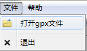

GPS室外定位轨迹编辑系统
使用说明
该系统采用Python语言基于QGIS进行二次开发，其主要功能包括基础GIS功能，如放大、缩小、漫游，遥感影像图加载；以及GPS文件读取、解析，对GPS路径点的选择、高亮、编辑、保存，并可生成GPS路径三维可视化系统所需数据文件。
本系统基于QGIS开发，因此运行的时候需要依赖QGIS的库，QGIS的库文件已经全部放在qgis文件夹中，需要先设置环境变量QGIS_PREFIX为qgis文件夹的路径。如下图所示：
环境变量设置好以后，从程序文件夹中找到TrackEditer.exe文件，双击执行。
首次执行需要几秒钟的时间，如果环境变量设置正确，将会出现如下图所示的程序主窗口，系统启动完成，便可正常使用。
gpx文件是GPS生成定位数据的标准格式文件。在本系统中打开一个gpx文件有两种方法，一是选择“文件”-“打开gpx文件”菜单，如下左图；二是直接单击系统工具条提供的文件打开图标，如下右图。

打开之后，gpx文件中的数据点将会出现在遥感图像中相应的位置。注意，由于遥感图像只是35中学周边的范围，如果GPS定位点距离遥感图像较远，二者将无法叠加显示在一起。
打开系统之后，可以进行地图平移，地图放大，地图缩小的操作。在做相应的操作之前，需要单机对应的按钮。地图漫游操作的按钮如下图所示：
系统默认使用的是地图平移的操作，滚动鼠标的滚轮也可以进行地图放大和缩小的操作。在平移或者缩放操作之后，如果想快速回到系统启动时地图全幅显示的状态，可以使用全幅显示操作。
系统中地图上的一个点，称为一个“要素”。要对一个或者多个要素进行编辑，首先需要对这些要素进行选择。使用要素选择工具可以选择一个或多个要素。要素被选中之后会高亮显示，变成黄色。下图为选中一系列要素的效果：
在要素被选中后，用鼠标在地图上拖动被选中的要素到合适的位置，然后松开鼠标，即可完成要素的移动。编辑完成后不需要额外的保存工作，系统会自动保存。
关闭系统即可。可以使用“文件”-“退出”菜单，也可以使用系统窗口右上角的关闭按钮。
可以从系统中打开本帮助文档，选择“帮助“-”文档“菜单。”关于”菜单中是本系统的信息。